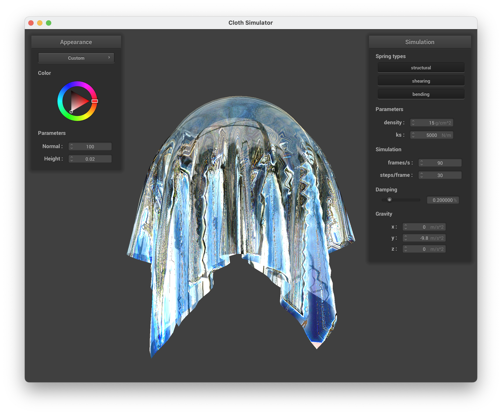

CS 184: Computer Graphics and Imaging, Spring 2024
Project 4: Cloth Simulator
Sue Young Shim
Final Submission
Overview
In my Cloth Simulator project deliverable, I meticulously documented the cloth's behavior and appearance under different physical constraints and rendering techniques. This included wireframe visualizations with varying shearing and structural constraints, an exploration of how changing parameters such as spring constants, density, and damping influence the cloth's dynamics, and a display of the cloth's final resting state on both a sphere and a plane, the latter showcasing custom color application. Detailed examinations of shader programming, particularly the implementation of the Blinn-Phong shading model, were accompanied by screenshots of each lighting component and a discussion on the impact of mesh resolution on bump and displacement mapping. I also demonstrated the effects of a mirror and glass shaders.
Part 1: Masses and springs
Implementation Overview
The project involved simulating cloth dynamics through a model consisting of point masses connected by springs, designed to replicate the physical properties of cloth. Implementation was carried out in the Cloth::buildGrid function within cloth.cpp, initializing a grid of point masses according to the given dimensions and parameters of the cloth. Orientation determined the positioning strategy: horizontal cloths had fixed y coordinates, while vertical cloths received slight random z offsets for each mass to mimic natural fabric behavior.
Point Masses were organized in row-major order in the point_masses vector. Pinned points, indicating parts of the cloth fixed in space, were marked as immovable. Springs were then meticulously added to impose structural, shearing, and bending constraints, reflecting the cloth's physical interactions such as resistance and flexibility.
|
Zoomed in
|
Initial configuration ($\text{ks} = 5,000$)
|
Zoomed out
|
|
Wireframes with different constraints
|
No shearing constraints
|
|
Only shearing constraints
|
|
All constraints
|
Part 2: Simulation via numerical integration
Implementation Overview
The simulation starts by calculating the total force acting on each point mass, combining external accelerations with spring correction forces. External forces are derived from accelerations like gravity, uniformly affecting all masses. Spring forces, adjusted for each spring based on its type and state, are calculated using Hooke's law, considering the spring's rest length and the positions of the masses it connects.
Verlet integration is then used to update the positions of point masses. This method calculates new positions based on current and previous positions, velocities, and the total force-derived acceleration, incorporating a damping factor to simulate energy loss. Point masses are updated unless pinned, ensuring static parts of the cloth remain fixed.
An additional constraint from Provot's 1995 paper limits spring deformation, correcting positions so that no spring extends beyond 10% of its rest length. This is applied evenly unless a mass is pinned, in which case the mobile mass adjusts fully.
Different ks values
|
ks = 1
|
ks = 100
|
ks = 100000
|
Observing how different spring constant (ks) values affect cloth simulation:
- ks = 1: The cloth demonstrates extreme flexibility, with significant drooping and minimal resistance to bending, indicating a very low spring force.
- ks = 100: There's a noticeable increase in the cloth's stiffness, resulting in a more natural-looking drape with moderate sagging.
- ks = 100000: At a high spring constant, the cloth behaves almost like a rigid body, barely sagging under gravity, indicative of a very stiff material.
Different density values
|
density = 1
|
density = 100
|
density = 100000
|
Observing how different density values affect cloth simulation:
- Density = 1: With a low density value, the cloth appears lightweight, leading to subtle curves and minimal folding from its own weight.
- Density = 100: A medium density value results in the cloth having more weight, which manifests as a deeper sag and more pronounced curves due to gravity's effect.
- Density = 100000: High density greatly amplifies the gravitational pull on the cloth, causing heavy sagging and deep, dramatic folds, as the cloth becomes significantly heavier.
Different damping values
|
damping = 0
|
damping ≈ 0.5
|
damping = 1
|
Observing how different damping values affect cloth simulation:
- Damping = 0: Exhibits significant oscillation, with continuing movements and high energy, resulting in a extended time to reach a rest state.
- Damping ≈ 0.5: Shows a marked reduction in oscillation, allowing for a quicker stabilization and descent to the rest state, demonstrating an optimal balance between motion and damping.
- Damping = 1: Virtually eliminates oscillation, leading to a very controlled and slow descent. However, this also results in a slower overall movement towards the rest state, as the cloth seems to resist rapid changes in motion.
Comparing with default parameters
|
Default Parameters
|
density = 100000
|
|
|
Default Parameters
|
ks = 1
|
|
Upon comparing the cloth simulation with default parameters to the ones with altered density and spring constant values, certain observations emerge. The default parameters result in a cloth that strikes a balance between stiffness and pliability, with a natural-looking drape that neither sags too heavily nor appears too stiff. When the density is ramped up to 100,000, the cloth exhibits much more pronounced sagging due to the increased gravitational pull on the heavier cloth, resulting in deeper folds and a more dramatic drape. Interestingly, when the spring constant is set to 1, a similar level of sagging is observed, not due to increased weight but because of the cloth’s significantly reduced resistance to bending and stretching. Both the high-density and low-spring constant scenarios yield a cloth that droops markedly, but for different physical reasons: one simulates a heavier fabric, while the other a much softer, more elastic material. Despite the different underlying causes—weight for density and stiffness for spring constant—the visual outcomes are notably alike, with both conditions leading to a cloth that sags extensively, highlighting the complex interplay between material properties in cloth simulation.
scene/pinned4.json in its final resting state with default parameters.
Part 3: Handling collisions with other objects
Implementation Overview
For Part 3 of my Cloth Simulator project, I implemented collision handling for cloth with other objects. I developed a method within the Sphere and Plane classes to detect collisions and adjust the position of point masses accordingly. When a point mass intersected or was inside the sphere, I computed the intersection on the sphere's surface along the path from the point mass's position to the sphere's origin, adjusting the point mass's last known position towards this tangent point by a correction vector, with friction scaling down the adjustment. The same logic was applied to plane collisions, where point masses that crossed the plane were bumped back to the plane's surface, considering a small offset to prevent re-collisions. The results of these implementations were rigorously tested in scenes with different spring constants (ks) to ensure the cloth draped realistically over a sphere and lay restfully on a plane, with screenshots captured to showcase the final resting states under these conditions.
Shaded cloth in its final resting state
on the sphere with different ks values
|
$\text{ks} = 500$
|
Initial configuration ($\text{ks} = 5,000$)
|
$\text{ks} = 50,000$
|
|
The images showcase three simulations of a cloth draping over a sphere with varying spring constant (ks) values. There are clear differences in the cloth's behavior and final resting state. At a lower ks value of 500, the cloth conforms closely to the sphere, with many wrinkles and a gentle drape, indicative of a soft and highly flexible material. The simulation with an initial configuration ks of 5,000 exhibits a balance between stiffness and flexibility, with fewer wrinkles than the lower ks value, suggesting a slightly stiffer fabric that still molds to the shape of the sphere. At a high ks value of 50,000, the cloth demonstrates much less conformity to the sphere's shape, with larger and fewer folds, resembling a much stiffer material that resists bending and folding. Across the simulations, as the ks value increases, the cloth transitions from a soft, flexible material to a stiffer one, which is less influenced by the sphere's contours and gravity.
Shaded cloth lying peacefully at rest on the plane
Part 4: Handling self-collisions
How cloth falls and folds on itself
|
Self collision 1
|
Self collision 2
|
Self collision 3
|
How density as well as ks affect the behavior of the cloth
|
$\text{density} = 1$
|
$\text{density} = 50$
|
|
$\text{ks} = 1,000$
|
$\text{ks} = 7,500$
|
Varying density and spring constant (ks) values reveal distinct cloth behaviors. With a density of 1, the cloth appears more weightless, moving with a pronounced buoyancy that allows it to spread with less gravitational influence. When the density is increased to 50, the cloth's response to gravity becomes more apparent—it almost collapses onto the underlying surface, mimicking a heavier fabric that folds and conforms to the contours below.
As for the spring constant values, a ks of 1,000 gives the cloth a pronounced elasticity, leading to significant stretching and deformation, which indicates a relatively flexible material. In contrast, a ks of 7,500 results in a cloth that maintains a more coherent structure even as it interacts with the environment, suggesting a material with higher resistance to deformation.
Part 5: Cloth Sim
Shader Program
A shader program is designed to run on the GPU, shaping how graphics are rendered by manipulating pixels, vertices, and textures using a specific shading language. Among shader types, vertex and fragment shaders are pivotal in crafting lighting and material effects in 3D scenes.
The vertex shader acts first, transforming 3D vertices into 2D projections and handling vertex attributes like position and lighting. It can also modify object shapes for dynamic effects. Following this, the rasterized fragments are handed off to the fragment shader, which calculates the color and texture of each pixel by considering interpolated vertex data and lighting. This shader is crucial for detailed lighting effects, texture application, and simulating how light interacts with surfaces, utilizing material properties and the scene's lighting setup.
Together, these shaders transform 3D models into realistically rendered 2D images on the screen, allowing for intricate visual effects and lifelike representations in digital environments. Through the manipulation of light and texture at the pixel level, they enable the creation of highly realistic or stylistically unique visual experiences in graphics applications and games.
Blinn-Phong Shading
The Blinn-Phong shading model aims at realistically simulating the interaction of light with 3D surfaces to enhance visual realism. This model simplifies calculations and improves efficiency by focusing on the halfway vector, which is the direction halfway between the viewer's line of sight and the light source direction, rather than directly calculating the reflection vector as in the original Phong model. The Blinn-Phong model captures three key aspects of light interaction: ambient lighting, which ensures objects are visible even without direct illumination; diffuse reflection, which gives objects their base color by scattering light evenly across surfaces; and specular reflection, which creates the shiny highlights on smooth surfaces. The intensity and sharpness of these highlights are adjusted based on the angle between the halfway vector and the surface normal, influenced by the material's properties. This approach makes the Blinn-Phong model particularly suited for real-time applications like video games, where it provides a good balance between visual realism and computational efficiency.
Different components of Blinn-Phong shader
|
Ambient component only
|
Diffuse component only
|
|
Specular component only
|
Complete Blinn-Phong model
|
Texture Mapping
Bump mapping
|
Bump Mapping on the Sphere
|
Bump Mapping on the Cloth
|
Displacement Mapping
Comparison of Mesh Coarseness
|
Sphere with 16 x 16 Mesh Resolution
|
Sphere with 128 x 28 Mesh Resolution
|
The images above presents a visual comparison of mesh coarseness in a cloth simulation, emphasizing the impact of mesh resolution on the quality of displacement mapping. With a 16x16 mesh resolution, the sphere's surface appears distinctly faceted and the edges of each mesh segment are clearly visible, resulting in a rough and segmented representation. This coarseness significantly affects the fidelity of displacement mapping, as the geometric detail that can be simulated is limited by the low number of vertices.
In contrast, the sphere with a 128x128 mesh resolution demonstrates a much smoother surface with finer segments that closely approximate a true sphere. The increased number of vertices allows for a more detailed and nuanced displacement mapping, capturing subtler contours and textures on the sphere's surface. The higher resolution mesh thus offers a more realistic simulation of the cloth's texture and drape, providing a clear visual enhancement over the lower resolution counterpart.
Mirror Shader
|
Mirror Shader on the Sphere
|
Mirror Shader on the Cloth
|
Glass Shader
|
Glass Shader on the Sphere
|

Glass Shader on the Cloth
|
Glass Shader on the Cloth
|
The shader code is set up to render a surface that mimics a semi-transparent material with both reflective and refractive properties. It takes in parameters for the camera and light positions, material properties, and texture data, including a cube map for environmental effects. Normalized vectors for surface normal and view direction form the basis for calculating reflection and refraction, with the degree of each influenced by the Fresnel effect, modulated for reduced reflectivity. The shader then samples a cube map texture to obtain colors for the reflected and refracted light using the built-in reflect and refract functions and blends them according to the Fresnel factor. The output is a final color with controlled transparency, resulting in a realistic portrayal of a material that both reflects and bends light, like glass or clear water.